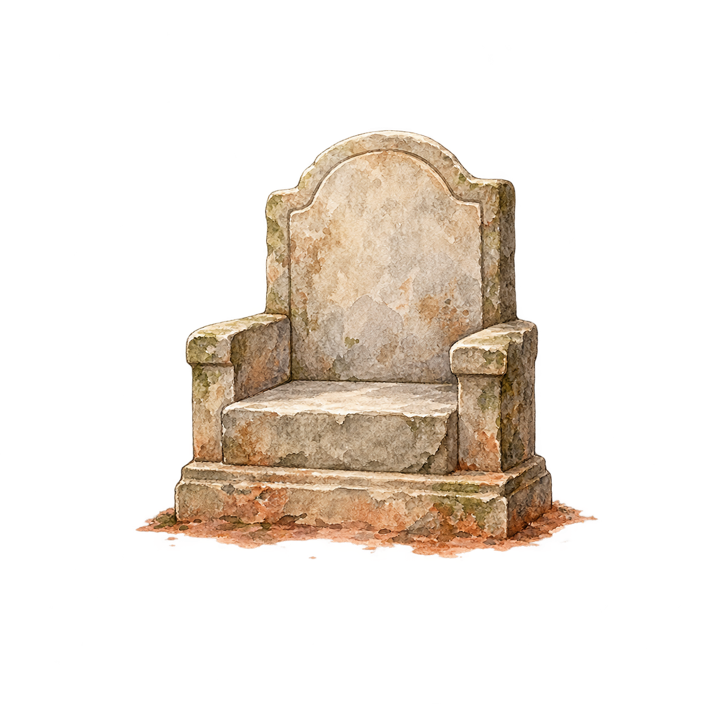

The complete book
Contents
Find a poem. Stay a little longer.

Reader tools
Find a poem or introduction
Text size
Saved places & passages
Select a word or phrase to underline it. On a phone, hold a word and adjust the handles.
Your place, bookmarks and underlines stay on this device.
- ସିଂହଦ୍ଵାର01
- ସବୁ ଠିକ୍ ଥିଲା-02
- ମୁହୂର୍ତକ ପାଇଁ ବି03
- ଶୁନ୍ୟରୁ ପଡ଼ି04
- ସବୁ ସଂବାଦ05
- କେତେବେଳେ ପୂର୍ଣ୍ଣ06
- ସଂଜୟ!07
- ସେତ ଥିଲା08
- ହସ୍ତିନା କି ଇଂଦ୍ରପ୍ରସ୍ଥ09
- ଚତୁରୀ ପୋଇଲି ଚେତାଇ ଦେଲା:10
- ମୃତ୍ୟୁ ଅପସରିଯାଏ11
- ନିଜକୁ ଦାସଟିଏ କରି12
- ଏବେ କାଠ ଘୋଡ଼ାଟାକୁ13
- ଏମିତି ବି ଘଟେ ବେଳେ ବେଳେ-14
- ସିଂଦୁରା ଫାଟିଲା ବେଳକୁ15
- ଚଂଡାଶୋକ ଅବା ଧର୍ମାଶୋକ-16
- ନଦୀଶଯ୍ୟାରେ ପାଣି ନ ଥିଲା,17
- ଜଣେ କୌଟିଲ୍ୟ18
- କୋଷରେ ଶୋଭା ପାଉଥିଲା ଖଡ଼୍ଗ,19
- ଦିନେ ପରିଚାରିକା20
- ମେଘର ମାୟାକୁ ଭୁଲି21
- ଦେବତାମାନେ ବି22
- ସିଂହାସନ23
- କେତେବେଳେ ଦିଲ୍ଲୀରେ ତ24
- କିଏ ପ୍ରଜା କିଏ ରାଜା?25
- ଜେମା ମିଳିଲେ ନାହିଁ ଉଆସରେ26
- ହତ୍ୟା ଓ ବିଭୀଷିକା ପରେ ସିଂହାସନ27
- ନାମ ସିନା ଭିନ୍ନ ଭିନ୍ନ28
- ପୋଷାକ ପିଂଧାଇ ଦିଅ29
- ପ୍ରାସାଦ ସୁଂଦର ଦିଶେ ପର୍ବତ ଶୀର୍ଷରେ,30
- ଈଶ୍ଵରଂକ ପ୍ରତିନିଧି31
- କେତେବେଳେ ନିଶା ପାଣିରେ32
- ଗୋଟାଏ ରାଜାର ଖିଆଲ33
- ମହାରାଜାଂକ ଛିଂକ ପାଇଁ ନାସ34
- ବେପାରୀମାନେ35
- କଥାଟା ବାଜୁବାଜୁ କାନରେ36
- ବୀରବାଦ୍ୟ ବାଜୁଛି,37
- ନଗର ନିର୍ମାଣର ଆଦେଶକୁ38
- ଲହୁରେ ଭାସୁଛି ରାସ୍ତା39
- ଦେଶର ସମୃଦ୍ଧି ଯଦି ବାଣିଜ୍ୟରେ40
- ସେ ଅଂଟା ସଳଖି ବସିଲା41
- ପୋଡ଼ା ଜଳାର ଶିଖା ତଳେ ଦିଲ୍ଲୀ ।42
- ବାକ୍ୟ ପୂରଣ କରିବାକୁ ବେଳ ନଥିଲା ହାତରେ,43
- ଉଦ୍ଦଂତ ଗଣନୃତ୍ୟର ଆଖଡ଼ାଘରେ44
- ଏପରି ଦୃଶ୍ୟଟିଏ45
- ଚରମ ପତ୍ର ଭଗବାନଂକୁ,46
- ଏବେ ସାରା ଦେଶରେ47
- ସେ’ତ ସାଧାରଣ ହନୁଟିଏ48
- ଦସ୍ୟୁର ଲୁଂଠନ,49
- ଅସୂର୍ଯ ବଳୟ50
- “ମଧୁର ବିନୟ ବଚନ51
- ଚଉକିରେ ବସିଥିଲେ ବି52
- ଆଦେଶ ନ ଥାଏ,53
- “ତୁ’ ତୁ’ ଡାକିଲି ମୁହିଁ54
- ତୋଟା ଜଗୁଥିଲା,55
- ଚାହିଁଦେଲେ56
- କାଉ କି କୋଇଲି57
- ସେମାନେ ଆସିବେ58
- ପ୍ରଜା ମାଗୁଥିଲେ59
- ଗର୍ଭଣୀ ଗାଈ ବାଟ ଛାଡ଼ିଦିଏ,60
- ସୁରକ୍ଷା ବଳୟ ଭିତରେ61
- ସେଦିନ ପିଂପୁଡ଼ିମାନଂକୁ62
- କାଂଥରେ ଫଳକ ଝୁଲୁଛି:63
- ଆଗ କଥାଟା ଶୁଣିନିଅ-64
- ଉଲଂଗ ପଟୁଆରରେ ରାଜା,65
- ତୁ କେଉଁ ମାଧବରେ66
- ତେଣୁ ଆଦେଶ ପାଳିବାକୁ ହେବ ।67
- ଖସାଇ ଦେବାର ଘୋଡ଼ା ବେପାର68
- ଶେଷରେ ଗୋଟାଏ ବ୍ରାହ୍ମ ମୁହୁର୍ତରେ69